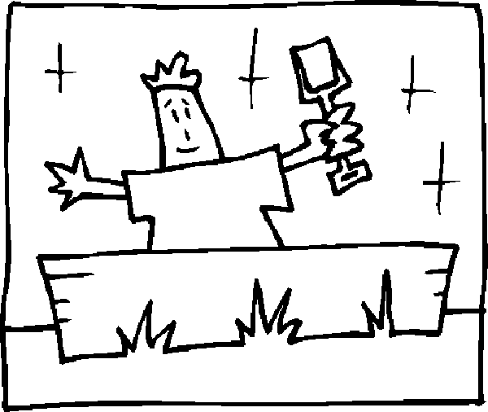

i started this site finally (obviously). i have some crazy ideas for things to add. actually, i have way too many to keep in my mind. i should probably write them down so i dont forget. read more to check out the list of ideas thus far.
read morethe sandbox

welcome to toddeman.com
this is just a simple site for me to try new things on the web. new projects and ideas on this site will be listed under sandbox. links to other projects i have going or have finished will be listed under lauchpad. check out whats new for a little news feed on the latest happenings. if you need to contact me or would care to know a little more about me check out contact and about.
read moreso i run this sites dev environment on an arch linux box. that was a pain to get all set up, but now that it IS set up, its one of the best distros ive used yet. read more for my explaination why, as well as the set up procedure and some quick gotchas that i have learned.
read morethis site is running on rails so to speak. it is my first foreaux (spelling?) into ruby on rails. it has been fun thus far (enforcing the slogan i have heard before 'ruby: make coding fun again') and also has made deployment a snap (again, enforcing the slogan 'rails: from 0 - deploy in X minutes). read more to check out the process as well as some tips and tricks ive picked up in my (extremely) limited experience thus far.
read more